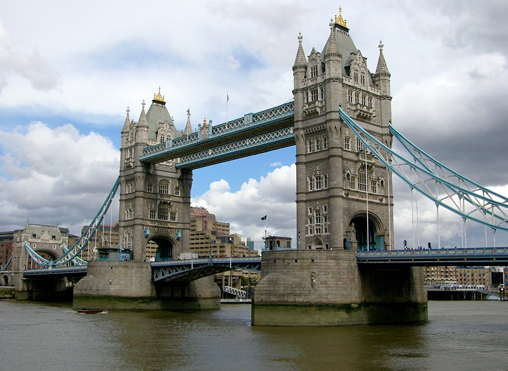
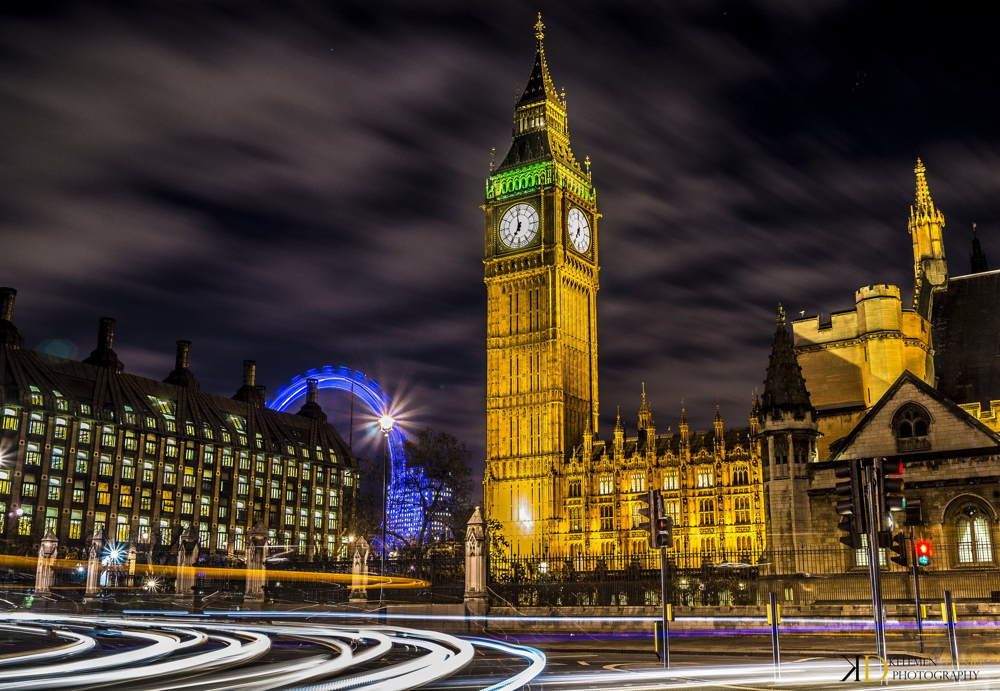
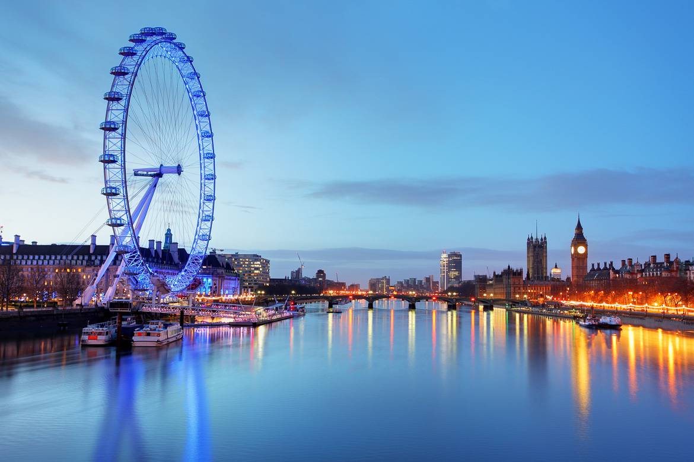

Londres
Position géographique
Histoire
Le Big Ben
La grande Roue
Londres est la capitale et la plus grande ville d'Angleterre et du Royaume-Uni. La ville est située à 163 km au sud-est de Birmingham, à 262 km au sud-est de Manchester, à 272 km au sud-sud-est de Leeds, à 344 km au nord-nord-ouest de Paris, à 534 km au sud-sud-est d'Édimbourg et à 556 km au sud-sud-est de Glasgow. La capitale britannique borde la Tamise, un fleuve du Sud de l'Angleterre et dont le cours se termine en mer du Nord méridionale.
L'histoire de Londres est riche et complexe, remontant à l'ère romaine. Voici un résumé succinct des moments clés de son histoire : Époque romaine (43-410 après J.-C.) : Londres, alors appelée Londinium, est fondée par les Romains autour de 43 après J.-C. C'était un centre commercial et administratif important de la province romaine de Bretagne. Moyen Âge (410-1485) : Après le départ des Romains, Londres a été envahie par les Anglo-Saxons. Au fil des siècles, elle est devenue un centre de pouvoir avec la Tour de Londres construite par Guillaume le Conquérant en 1078. Au Moyen Âge, elle a connu des événements tels que la Grande Peste de 1665 et le Grand Incendie de 1666. Ère Tudor (1485-1603) : Sous les Tudors, notamment avec Henry VIII et Élisabeth I, Londres s'est développée en tant que centre culturel et économique. 17e siècle : Londres a été le théâtre de la guerre civile anglaise (1642-1651), aboutissant à l'exécution de Charles I en 1649. Après une période républicaine sous Oliver Cromwell, la monarchie a été restaurée en 1660 avec Charles II. 18e et 19e siècles : La Révolution industrielle a transformé Londres en une métropole en pleine expansion. Les problèmes liés à la croissance rapide, tels que la pauvreté et les conditions de vie insalubres, ont été soulignés par des événements tels que la Révolte de Gordon en 1780. Ère victorienne (1837-1901) : Londres est devenue la capitale de l'Empire britannique et a connu une expansion urbaine significative avec des projets d'infrastructure majeurs, y compris la construction du métro de Londres. 20e siècle : Londres a été touchée pendant les deux guerres mondiales, en particulier pendant le Blitz de la Seconde Guerre mondiale. Après la guerre, la ville a connu une reconstruction et une période de changements sociaux et culturels. 21e siècle : Londres reste une métropole mondiale influente, un centre financier majeur, et a accueilli les Jeux olympiques d'été en 2012. La ville continue d'être le centre politique, économique et culturel du Royaume-Uni.
Big Ben est la tour horloge du palais de Westminster, et un symbole de la ville de Londres. Le palais, siège du parlement britannique, fait face à la Tamise, entre le pont de Westminster et l’abbaye de Westminster. Son nom officiel, initialement Clock Tower (« la tour de l’Horloge »), est Elizabeth Tower (« la tour Élisabeth ») depuis le jubilé de diamant d’Élisabeth II en 2012. La tour et son horloge sont plus couramment dénommées Big Ben par métonymie, Big Ben (« le gros Ben ») étant le surnom de la cloche de 13,7 tonnes se trouvant au sommet12. La cloche elle-même est impressionnante, pesant 13,5 tonnes et située à l’intérieur de la tour. Les horloges de la Tour Big Ben ont été mises en marche en mai 1859. Elles mesurent 7 mètres de diamètre et sont placées sur chacune des faces de la tourBig Ben est aujourd’hui le symbole de la nation et ses coups de cloches sont retransmis chaque jour sur l’antenne de la radio de la BBC
La grande roue de Londres, également connue sous le nom de London Eye ou l’Œil de Londres, est devenue l’une des icônes les plus emblématiques de la ville et de la Grande-Bretagne toute entière. Inaugurée à l’occasion du nouveau millénaire, cette imposante roue mesure 135 mètres de haut et offre des vues panoramiques spectaculaires sur la ville et la campagne environnante.
